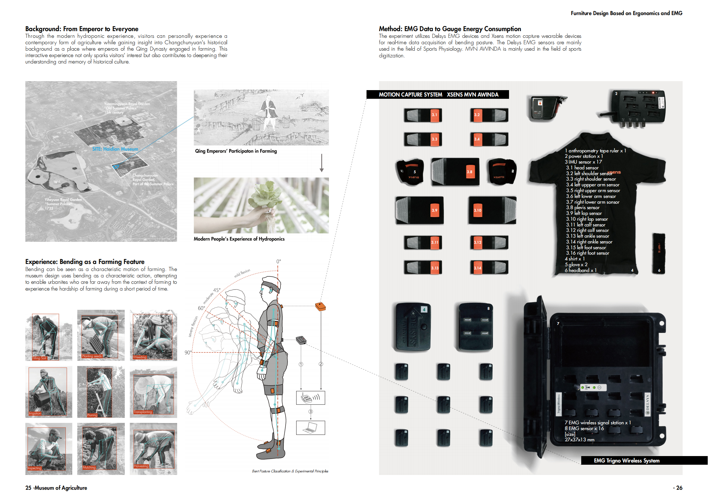
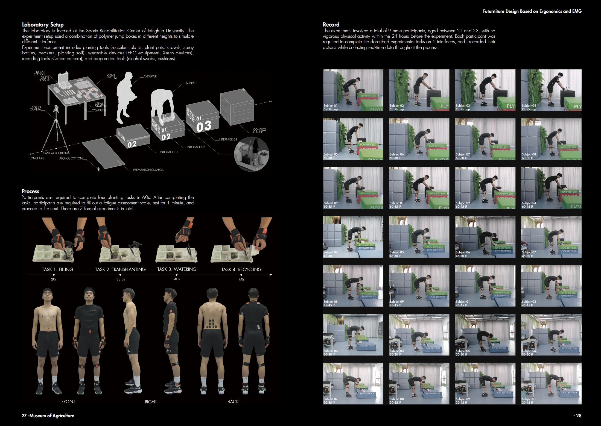
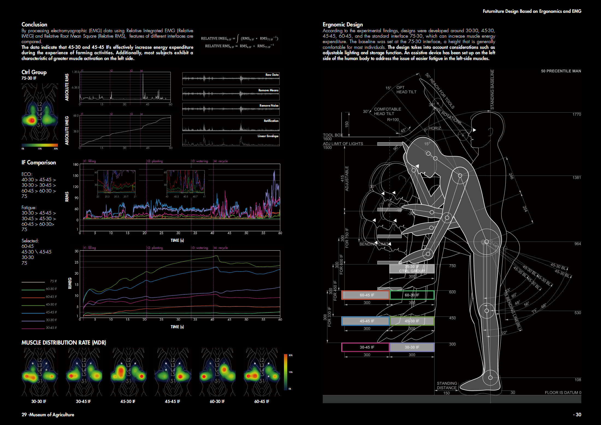
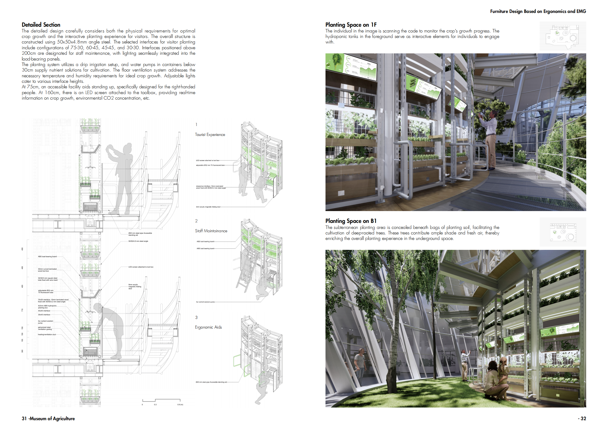
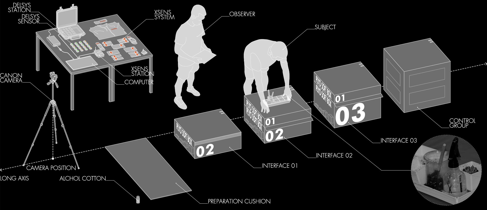
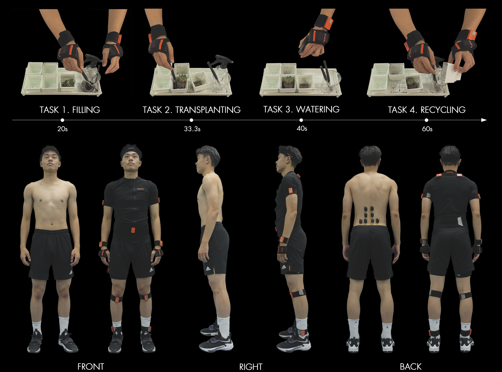
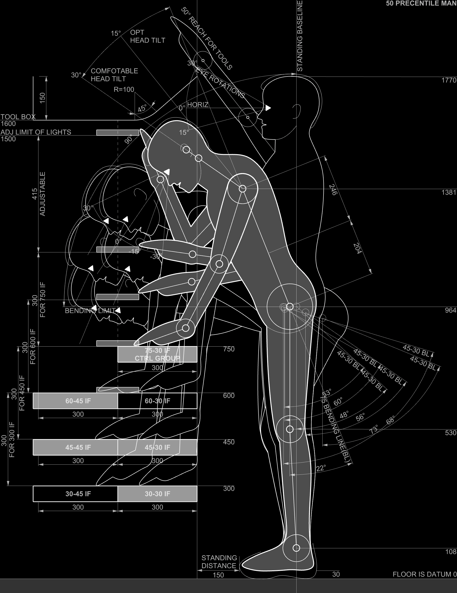
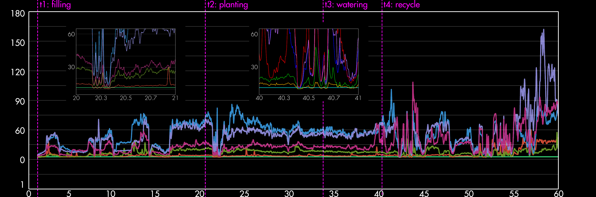

弯姿种植作业强度与工作界面的耦合关系研究 (本科毕设)
-
研究意图于通过适当增加劳动过程中的肌肉耗能来增强具身性体验。量化实验的目标是确定一种偏差性的工作界面，使得作业人员在交互时肌肉消耗能量适当上升，但不至于损害健康。
1.实验器材
该实验采用Delsys EMG设备和Xsens动作捕捉可穿戴设备进行弯曲姿势的实时数据采集。Delsys EMG传感器主要用于运动生理学领域，而MVN AWINDA则主要应用于运动数字化领域。
2.实验设计
界面变量一共有6个分别为：界面高度：30cm、45cm、60cm和界面深度：30cm、45cm的交叉组合。对照组是标准工作界面：高度75cm，深度30cm。
参与者需要在60秒内完成四项种植任务。完成任务后，参与者需填写疲劳评估量表，休息1分钟后进入下一轮实验。正式实验共进行7轮。
3.实验结论
通过使用相对积分肌电图（Relative IMEG）和相对均方根（Relative RMS）处理肌电（EMG）数据，对不同界面的特性进行了比较。 数据表明，45-30 和 45-45 界面（IFs）在农作活动体验中有效增加了能量消耗。此外，大多数受试者表现出左侧肌肉激活程度更高的特点。
4.针对设计策略
根据实验结果，设计围绕30-30、45-30、45-45、60-45和标准界面75-30展开，这些界面可以提高肌肉能量消耗。基准设置为75-30界面高度，因为这一高度对大多数人而言通常较为舒适。 设计中还考虑了可调节照明和储物功能等因素。在人体左侧设置了一个辅助装置，以解决左侧肌肉更易疲劳的问题
-
关键词: 人因工程学、肌电
项目类型：清华大学建筑学院本科毕业设计
时间: 2022.3-2022.6
指导：张利教授，清华大学建筑学院院长，teamminus
合作: 独立完成
主要贡献:
1.招募并开展10人次人因实验，确定比较不同界面劳作活动的背部肌肉耗能；
2.对收集到的肌电数据在EMGworks当中进行数据清洗，利用SPSS统计比较肌肉耗能；
2.根据人体工学标准分析弯姿种植情景，并针对性进行设计改善；
获奖: 清华大学建筑学院本科毕设A等作品
技能：rhino、EMGworks、SPSS、AutoCAD、Adobe Illustrator、Adobe Photoshop、Enscape





